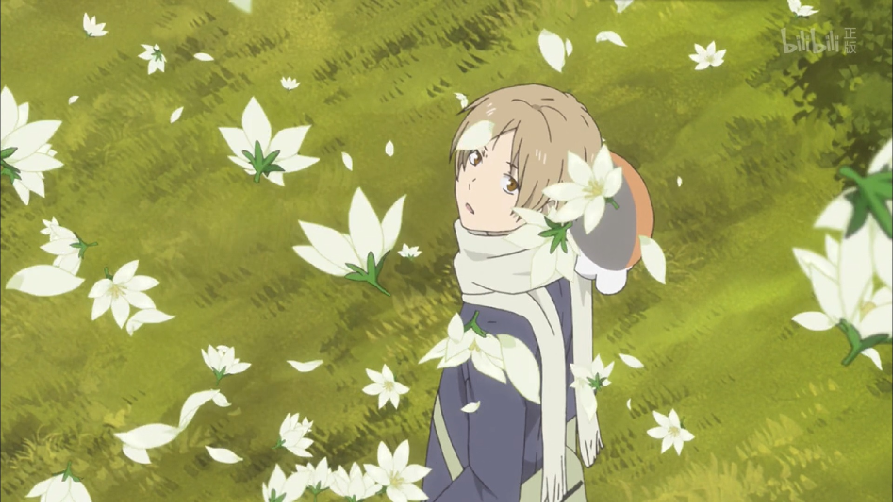
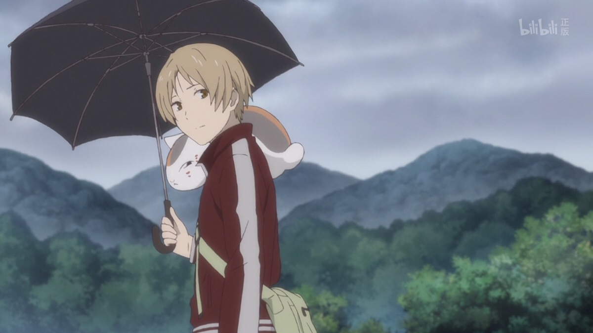
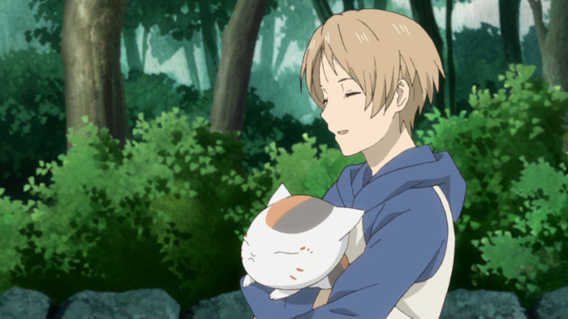

杨杨院线
电影名：夏目友人帐
时长：1小时40分
剧情简介：
每天在人与妖怪之间过着忙碌日子的夏目，偶然与过去的同学・结城重逢了，
以此想起了于妖怪有关的苦涩记忆。此时，夏目认识了在归还名字的妖怪记忆中出现的女性·
津村容莉枝。知晓玲子的她，现在和独子椋雄一起平静地生活着。夏目通过和他们交流，
心里也变得平静下来。但是这对母子所居住的城镇，似乎潜藏着神秘的妖怪。
在调查此事回来的路上，寄生于猫咪老师身体上的“妖之种”，在藤原家的庭院中，
一夜之间就长成树结出果实。不知为什么，吃掉了与自己形状相似果实的猫咪老师，
竟然分裂成了3个？





| 排片表 |
|---|
| | | |  |